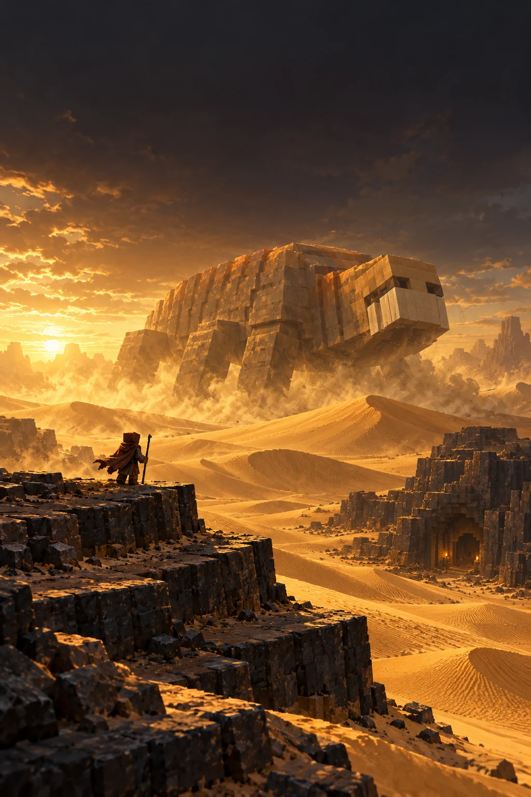

Walk a living desert
Dunes, oasis trees, cave sietches and darkstone formations up to three plateaus high. Find shelter before the Arrakis sun finds you.

PAPER 1.21.4 JAVA 21 PROJECT DUNE
A desert worth surviving.
A universe worth building.
Bring Arrakis to Minecraft. Choose your House, walk the dunes, harvest melange, and face the maker beneath the sand.
01 / ARRAKIS FIELD NOTES
Water is precious. Spice is power. Every expedition begins with a stillsuit and ends with a story.

Dunes, oasis trees, cave sietches and darkstone formations up to three plateaus high. Find shelter before the Arrakis sun finds you.
Use the tagged Spice Harvest Shovel to collect melange. Sell for Solaris, fill CHOAM quotas, or work a player-sponsored spice contract.
A desert-skinned Sniffer carries the sandworm’s form, with native zombie AI. Survive the encounter; its death leaves a rich spice field.
A WORD FROM THE SPACING GUILD
A sighting begins with coordinates on Arrakis. Fifteen real minutes later, the Guild announces it across the proxy network.
02 / ALLEGIANCE & HOMEWORLDS
Five factions. Five worlds. A different way to walk the same dangerous universe.

ARRAKIS / THE DESERT WORLD
The desert is home. Its secrets are survival.
Harvest two spice units per deposit and keep moving with an Arrakis speed bonus. The orange stillsuit is your first line of defense.
Arrakis has the complete gameplay guide: spice, shelter, sandworms, missions and Imperial rights.
World and House artwork is illustrative. Other planets have terrain profiles; their dedicated gameplay chapters are reserved for future expansion.

THE MAKER BENEATH THE SAND
Watch the sightings. Prepare for the encounter.
The dunes are never truly empty.
03 / CONTACTS BEYOND THE LEDGERS
Roaming smugglers carry two offers. Accept a contract, carry its cargo, and find another contact before time runs out.

Carry 64 tagged spice to a different smuggler, at least 64 horizontal blocks from your departure point.

Deliver 4 finite-source water buckets to another contact. Your empty buckets return when the mission is completed.
No open contracts from this contact.
The source NPC stays still and its camp lights up until its last contract ends.
Offline time counts. Expiry keeps your cargo and pays no reward.
Rewards are before the Trust levy. Imperial Spice Steward and House of Water appointees use ordinary spice sales with a 33% gross bonus instead of smuggler missions.
THE INVENTORY / EQUIP YOUR EXPEDITION
Familiar Minecraft materials. Dune rules, tagged equipment, and a purpose for every piece of your kit.

Survive Arrakis in a complete faction set.

Dig the deposits. Gather the wealth of worlds.

Trade spice for Solaris and fulfill contracts.

A precious cargo for hidden sietches.

Upgrade with Elytra and 1,000,000 Solaris.

Your Nether Star opens the realm menus.

A tagged Wind Charge with explosive impact.
The operator’s key to the admin GUI.
Select an item to open its manual chapter. Illustrated icons are reference art; in-game equipment uses the models and resource pack described in the guide.


04 / KEEPERS OF THE REALMS
Operators receive the Imperial Admin Scepter automatically. Right-click the modified blaze rod to open the administration GUI.
GUI controls require operator status. Sandworm summoning uses the dune.admin permission.
05 / THE ILLUSTRATED FIELD MANUAL
The complete player and administrator guide, dressed in gold, House motifs, spice and Minecraft-inspired artwork.
Gameplay, equipment, commands, configuration and installation. Arrakis fully documented; chapters reserved for four other planets.

PLAYER + ADMIN EDITION06 / BEGIN YOUR EXPEDITION
Install the suite on Paper 1.21.4 with Java 21. Enable the resource pack for the desert sandworm, haunted Fremen, spice and smuggler textures.
Download the latest build ↗Open a successful run and download the DuneRealms-Server-Package artifact. GitHub may require sign-in.
Explore the source on GitHub ↗Stop Paper and back up worlds, plugin data and your database before upgrading.
Place Vault, DuneCore, DuneNPC, DuneTerrain and DuneEss JARs in plugins/. Keep one JAR per plugin.
Match backend planet settings, restart, and enable DuneResourcePack.zip on clients. Use /dune help to begin.
Use one Paper backend per planet behind Velocity, matching plugin planet IDs and proxy server names. Enable BungeeCord plugin-message compatibility. Cross-server sightings need an online player connection on Arrakis; due notices wait while that backend is empty. Consult the manual for PostgreSQL, travel, persistence and current prototype limits.
The resource pack works with vanilla and Fabric Java 1.21.4 clients. Put the ZIP in .minecraft/resourcepacks and enable it in Options. Sandworms use Sniffer geometry with an invisible Husk controller. Smuggler textures change vanilla wandering traders; their missions run on Arrakis. Live Paper and Velocity behavior still needs staging-server verification.